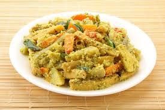

🥥 Avial Recipe

Ingredients
- 1 cup mixed vegetables (carrot, beans, raw banana, yam, etc.), cut into strips
- 1/2 cup grated coconut
- 2 green chilies
- 1/2 tsp cumin seeds
- 1/2 cup yogurt
- 1/4 tsp turmeric powder
- Salt to taste
- 1 tbsp coconut oil
- 8-10 curry leaves
Instructions
- Cook the vegetables with turmeric and salt until just tender.
- Grind coconut, green chilies, and cumin to a coarse paste.
- Add the paste to the cooked vegetables and simmer for a few minutes.
- Remove from heat, then add whisked yogurt and mix well.
- Drizzle coconut oil and add curry leaves on top.
- Serve warm with rice.
Serve With
- Steamed rice
- Adai
- South Indian thali
🌿 Tip: Use a variety of vegetables and don't overcook to maintain texture.